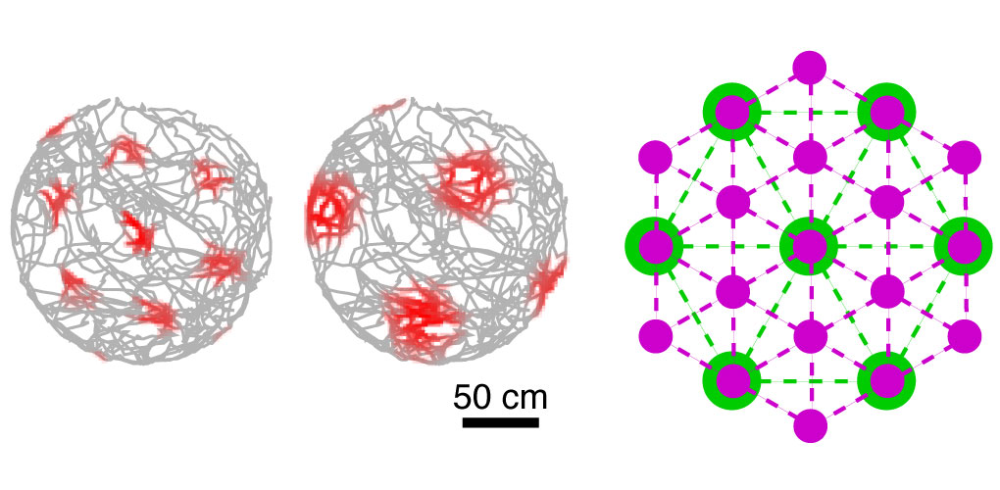
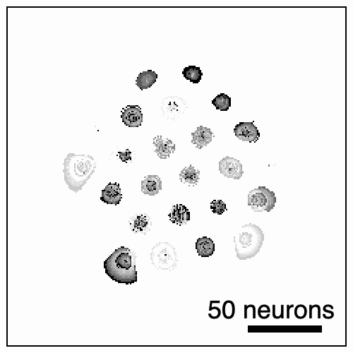
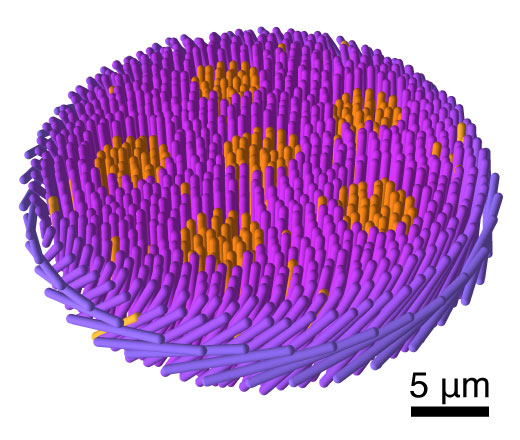
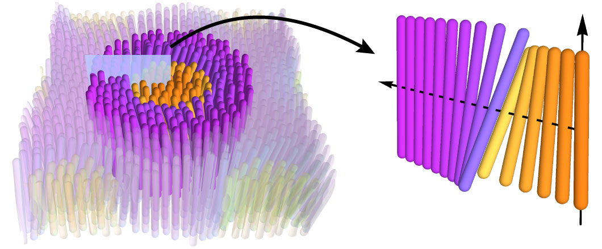

I am currently investigating grid cells through the theoretical framework of attractor networks.
The entorhinal cortex (EC) contains grid cells, each of which only fires when we approach certain locations that form a triangular lattice in space. There is experimental evidence that the grid cell network can be modeled as a continuous attractor, in which neural activity evolves through a set of attractor states that represent different positions in the 2D environment. However, existing attractor models did not capture several key phenomena exhibited by the grid system. Grid cells belong to modules, which suggests that spatial information is discretized in memories, and grid cells can fire in rapid sequences that may be related to memory consolidation or planning. Through simulations, I demonstrated how these phenomena arise in continuous attractors with the addition of experimentally observed or biologically plausible features of EC. My results suggest mechanisms through which the hippocampal region performs memory-related computations.


| [Web] | [PDF] | Kang L & DeWeese MR. Replay as wavefronts and theta sequences as bump oscillations in a grid cell attractor network. eLife 8, e46351 (2019). |
|---|---|---|
| [Web] | [PDF] | Kang L & Balasubramanian V. A geometric attractor mechanism for self-organization of entorhinal grid modules. eLife 8, e46687 (2019). |
My background in theoretical physics and clinical medicine has equipped me with unique interdisciplinary skills.
My interest in uncovering the quantitative principles that underlie biomedical problems led me to complete an MD/PhD program at the University of Pennsylvania. My PhD thesis was advised by Tom Lubensky in the Department of Physics. I studied liquid crystals, which are rod-shaped molecules or particles that prefer to align with one another, like uncooked spaghetti. Under certain conditions, they self-assemble into a 2D membrane containing “rafts” of one type of liquid crystal within a background of another type. This system is analogous to biological membranes with lipid rafts, whose mechanisms of formation are not known. Using the theory of continuum mechanics, I showed that rafts can arise from the propensity of liquid crystals to form twisted structures with a particular chirality, or handedness. I have since decided to forgo further clinical training and to devote my career towards understanding the brain, where I believe my quantitative skills can have greater biomedical impact.


| [Web] | [PDF] | Kang L & Lubensky TC. Chiral twist drives raft formation and organization in membranes composed of rod-like particles. PNAS 114, E19 (2017). |
|---|---|---|
| [Web] | [PDF] | Kang L, Gibaud T, Dogic Z & Lubensky TC. Entropic forces stabilize diverse emergent structures in colloidal membranes. Soft Matter 12, 386 (2016). |